채널: 레디포그로스 (Ready For Growth) | 길이: 21:42 | 날짜: 2026-02-04
베드 로팅(bed rotting)이라는 말을 정면으로 뒤집는다. 발화자는 침대에 누워 쇼츠나 릴스를 보며 “열심히 산 나에게 주는 힐링 타임”이라고 여기는 습관이 사실은 휴식이 아니라 위험 신호라고 강하게 규정한다. 시작하자마자 “지금 침대에 누워 이 영상을 보고 있다면 당장 상체를 일으켜 세워야 한다”고 말하며, 문제를 자기계발 습관 차원이 아니라 즉각 개입이 필요한 상태로 프레이밍한다. 제목과 도입의 핵심 메시지는 “당신이 쉬고 있는 것이 아니라, 뇌와 신경계가 셧다운에 가까운 상태로 들어가고 있다”는 것이다.도파민 디톡스가 아니라 도파민 스위칭이다. 발화자는 베드 로팅 상태의 INFP에게 스마트폰을 완전히 끄라는 조언은 고문과 다름없다고 말한다. 폰을 끄면 정적을 타고 불안감이 쓰나미처럼 밀려오기 때문에, 핵심은 차단이 아니라 콘텐츠의 종류를 10분만 바꾸는 것이라고 설명한다. 15초짜리 쇼츠, 자극적인 가십 기사처럼 뇌를 수동적 수용 상태로 만드는 콘텐츠를, 인테리어 소품을 장바구니에 담거나 여행 루트를 구글 맵으로 찍어보는 식의 능동적 탐색 콘텐츠로 전환하면, 소비보다 선택과 추구 과정에서 더 건강한 도파민이 분비된다고 스탠퍼드의 앤드류 후버만 연구를 인용하며 주장한다.상체 45도 법칙이다. 발화자는 침대 밖으로 나가는 것을 목표로 잡으면 완벽주의적 부담이 폭증하므로, 오늘의 목표는 씻고 갈아입고 생산적인 일을 하는 것이 아니라 “상체만 45도 세워서 등 뒤에 베개 하나 더 받치는 것”이어야 한다고 말한다. 그 이유로 망상 활성계, 즉 RAS라는 뇌간의 각성 스위치를 설명하면서, 누워 있을 때는 꺼지고 앉거나 기대면 켜지는 시스템이라고 소개한다. 상체를 45도만 일으켜도 혈압과 혈류가 바뀌면서 RAS가 자극을 받고, 뇌가 휴식 모드에서 각성 준비 모드로 전환되기 시작한다는 것이 영상의 논지다.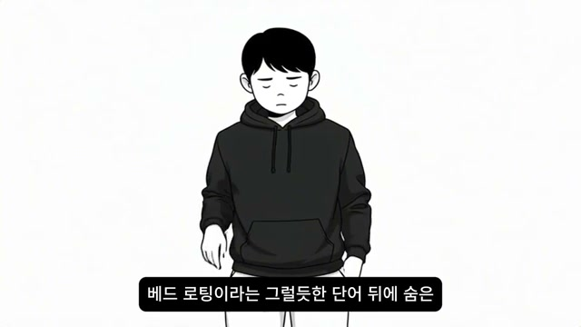
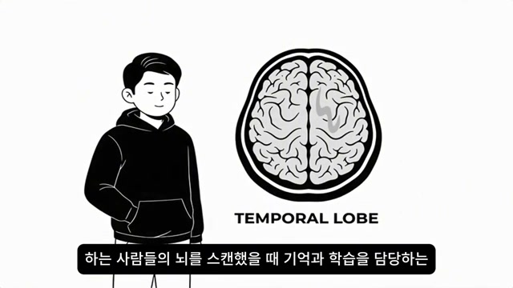
영상은 처음부터 “지금 이 영상을 침대에서 한 손으로 폰을 들고 보고 있다면 당장 상체를 세워라”는 식의 명령형 문장으로 시청자를 붙잡는다. 여기서 베드 로팅은 틱톡·릴스 유행어 뒤에 숨은 그럴듯한 단어일 뿐이며, 실제로는 위험성을 감춘 포장이라고 규정된다. 첫 번째 스크린샷은 텅 빈 흰 배경 위에 고개를 떨군 후드티 인물을 배치해, 감정적으로 납작해진 상태를 직관적으로 보여준다. 이어지는 두 번째 화면은 TEMPORAL LOBE라는 영어 라벨이 붙은 뇌 단면을 크게 띄워, 영상이 이후부터 자기계발 토크가 아니라 뇌과학 설명처럼 말하려 한다는 방향을 시각적으로 확정한다.
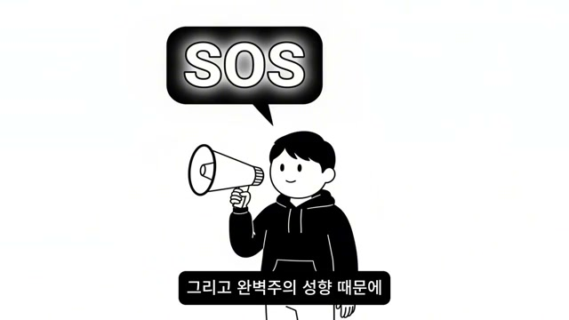
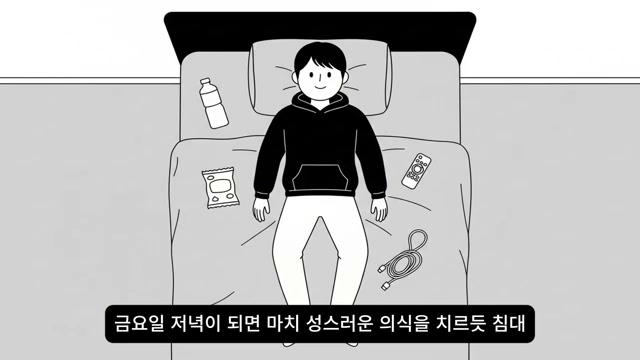
발화자는 생각이 많고 내면 에너지가 깊은 INFP, 그리고 완벽주의 때문에 늘 분석마비에 빠지는 사람들을 향해 “오늘 영상은 당신을 구출하기 위한 긴급 구조 신호”라고 선언한다. 이 부분에서 그는 왜 침대를 무덤으로 만들고 있었는지, 그리고 어떻게 고장난 뇌의 스위치를 다시 켤 수 있는지에 대한 “정교한 설계도”를 보여주겠다고 약속한다. 시각적으로는 SOS 말풍선과 확성기가 그 구조 신호의 톤을 직접적으로 강조하고, 다음 컷에서는 침대 위에 생수병, 간식 봉지, 리모컨, 케이블이 정돈된 탑뷰를 보여줌으로써 화자가 말하는 “주말 베드 로팅 세팅”이 어떤 의식처럼 이루어졌는지를 구체화한다. 즉 이 구간은 위험 진단과 동시에, 발화자가 이 문제의 외부 관찰자가 아니라 내부 경험자라는 신뢰를 만드는 구간이다.
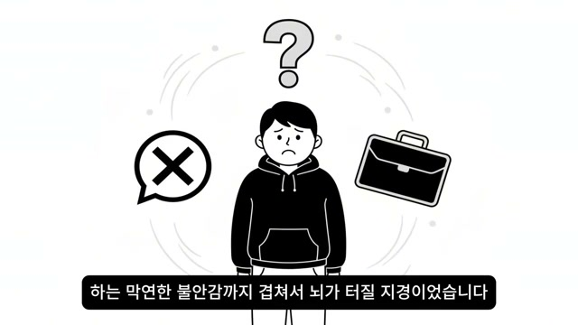
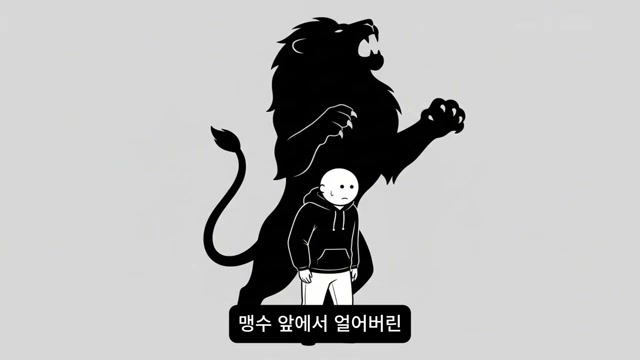
이후 영상은 베드 로팅 주말의 내면 묘사로 들어간다. 발화자는 몸은 멈춰 있는데 뇌는 시속 200km로 공회전하고 있었고, 지난주 말실수, 다음 주 프로젝트, 10년 뒤 생계 걱정이 한꺼번에 밀려와 터질 지경이었다고 말한다. 첫 번째 화면은 물음표, X표, 서류가방 같은 상징물로 걱정, 실패, 업무 압박을 묶어 보여주며 “겉은 게으른 휴식, 속은 과부하”라는 진술을 시각화한다. 이어지는 맹수 실루엣 장면은 이 상태가 단순 무기력이 아니라, 맹수 앞에서 얼어붙은 초식동물 같은 생존 반응이라는 핵심 비유를 강하게 각인시키는 장면이다.
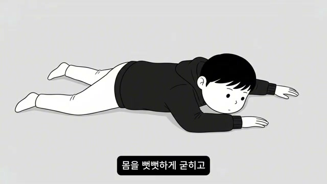
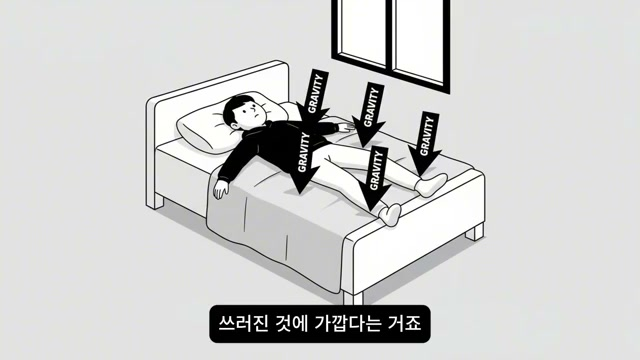
발화자는 감당할 수 없는 스트레스와 완벽주의 압박이 계속되면 뇌는 투쟁도 도피도 아닌 제3의 선택, 즉 얼어붙기와 죽은 척하기를 택한다고 설명한다. 특히 INFP의 뇌는 시뮬레이션 기능이 지나치게 발달해 있어서, 무언가를 시작하기도 전에 머릿속에서 이미 전개를 끝까지 돌리고 실패 확률까지 모두 계산해버리기 때문에, 행동 전에 먼저 지쳐버린다고 본다. 엎드린 인물 일러스트는 이 ‘굳어버림’을 직접 형상화하고, 다음 화면의 GRAVITY 화살표는 화자가 “침대가 편해서 누워 있는 것이 아니라, 현실의 중력을 버틸 에너지가 고갈되어 쓰러진 것에 가깝다”고 말하는 대목을 그대로 그림으로 옮긴다. 여기서 영상은 “당신은 게으른 것이 아니라 방전된 것”이라는 프레임 전환을 완성한다.
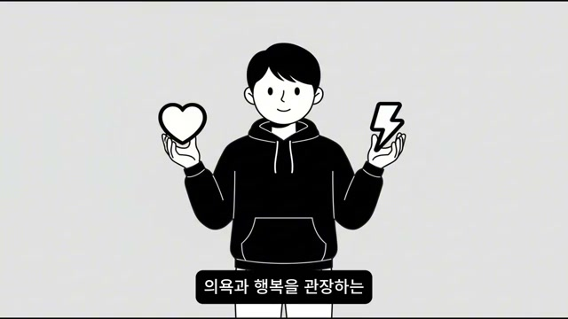
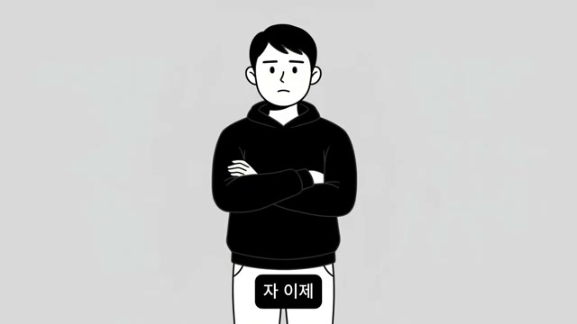
이 구간은 영상 전체에서 가장 의학적인 톤이 강한 부분이다. 발화자는 신체 활동 없이 누워만 있는 행동이 3일 이상 지속되면 C-반응성 단백질 같은 염증 지표가 상승하고, 염증 물질이 뇌로 올라가 도파민 분비를 억제한다고 주장한다. 심장과 번개를 든 캐릭터는 도파민을 행복과 의욕의 이중 상징으로 표현한 것이고, 이어지는 화면의 차분한 정면 인물은 “이제 진짜 문제를 짚겠다”는 설명 모드의 전환을 보여준다. 발화자는 이 메커니즘 때문에 10시간을 자도 개운하지 않고 오히려 더 우울하고 피곤하며, 사람들이 그 상태를 힐링이라고 포장하면서 스스로를 더 병들게 하고 있다고 정리한다.
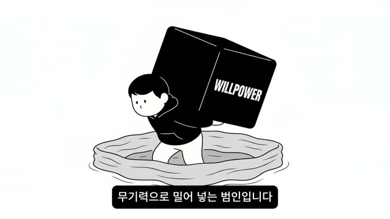
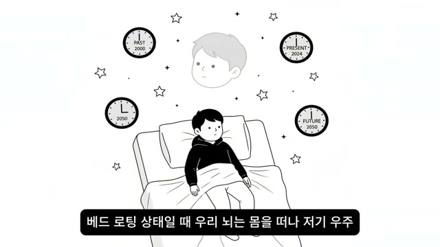
발화자는 이 시점에서 흔한 조언을 거부한다. 그는 “밖에 나가라, 산책하라, 규칙적으로 살아라, 햇빛을 쬐라” 같은 말은 이미 수도 없이 들었을 텐데, 그게 됐다면 애초에 이 영상을 보고 있지 않을 것이라고 말한다. WILLPOWER라고 적힌 거대한 상자를 메고 늪에 빠진 그림은, 억지 의지력이 오히려 사람을 더 깊은 무기력 속으로 밀어 넣는다고 보는 이 영상의 관점을 압축한 장면이다. 다음 화면에서 인물 주위에 PAST 2000, PRESENT 2024, FUTURE 2050 시계가 떠다니는 연출은 베드 로팅 상태를 몸과 정신의 연결이 끊어진 해리 상태, 즉 현재에 있지 못하고 시간 전체에 분산된 상태로 묘사하는 장치이며, 이때 발화자는 자신이 실제로 써먹었다는 4단계 신경계 재부팅 전략을 소개한다.
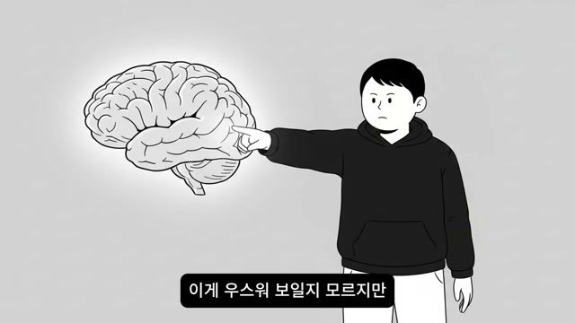
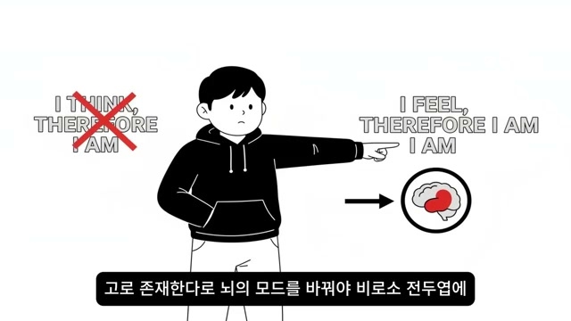
첫 번째 실천 단계는 발가락부터 몸 감각으로 돌아오는 것이다. 발화자는 누운 채로 발가락 끝 신경에 집중해 세 번만 오므렸다 펴 보고, 등 아래 매트리스의 감촉, 이불의 무게, 방 안의 온도까지 느껴보라고 지시한다. 여기서 두 번째 스크린샷이 매우 중요하다. I THINK, THEREFORE I AM은 붉게 지워지고, 대신 I FEEL, THEREFORE I AM이 제시되는데, 이는 이 영상이 생각의 주체성보다 감각의 주체성을 우선시한다는 선언이며, 동시에 디폴트 모드 네트워크에서 현재성 네트워크 쪽으로 스위치를 돌리라는 명령으로 작동한다. 발화자는 이 감각 집중이 과열된 잡생각 회로의 전원을 끄고 전두엽으로 신선한 혈류가 다시 돌게 만드는 첫 버튼이라고 설명한다.
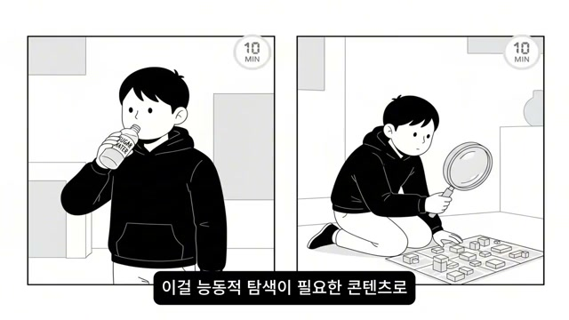
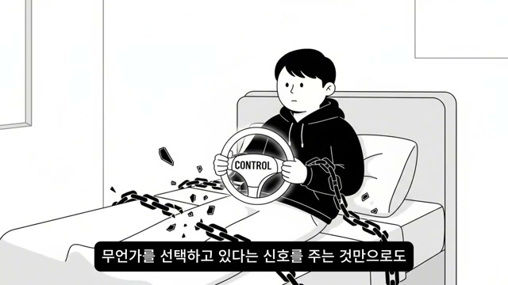
발화자는 “도파민 디톡스”라는 말보다 “도파민 스위칭”을 강조한다. 핵심은 스마트폰을 끄는 것이 아니라, 10분만이라도 콘텐츠 종류를 바꿔 수동적 소비에서 능동적 선택으로 이동하는 것이다. 화면은 이를 좌우 분할된 10 MIN 패널로 보여주는데, 한쪽은 무언가를 마시거나 보는 장면, 다른 한쪽은 돋보기로 블록이나 사물을 탐색하는 장면으로 구성되어 있어 “그냥 보기”와 “고르기·탐색하기”의 차이를 시각화한다. 이어지는 CONTROL 운전대와 끊어진 사슬 장면은, 침대에 누워 있더라도 내가 지금 질질 끌려가는 것이 아니라 무엇인가를 선택하고 있다는 신호만으로도 무기력의 사슬에 금이 가기 시작한다는 영상의 주장을 직접 상징한다.
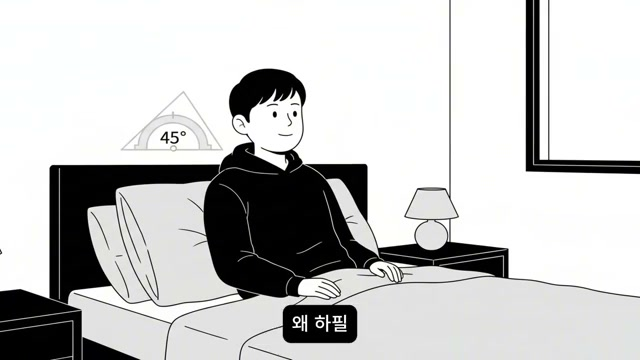
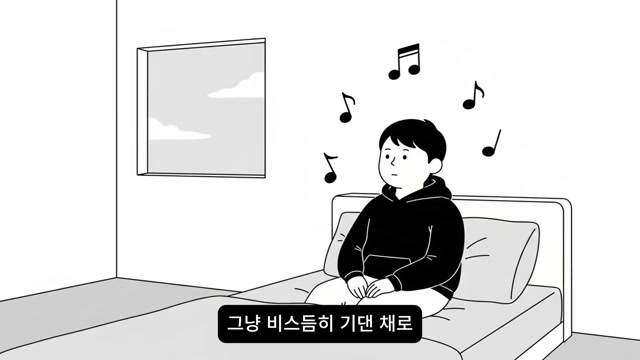
이 영상의 가장 실용적인 처방은 상체 45도 규칙이다. 발화자는 완벽주의적 성향이 있는 사람일수록 “일어나야지”라는 목표를 세우는 순간 그 뒤에 씻기, 옷 갈아입기, 생산적 일하기가 줄줄이 따라붙어 부담이 폭증하므로, 목표를 극단적으로 낮춰야 한다고 말한다. 화면의 삼각형 45° 표시는 이 규칙을 거의 매뉴얼 도식처럼 제시하며, 실제 동작은 그저 등 뒤에 베개 하나 더 받쳐 반쯤 앉는 정도로 설정된다. 이후 창문과 음표가 함께 등장하는 장면은 이 자세에서 해야 하는 일이 생산적 독서나 밀린 카톡 답장이 아니라, 그냥 비스듬히 기대 앉아 창밖을 보거나 좋아하는 음악 한 곡을 듣는 것임을 보여주며, 발화자는 이 자세 변화만으로도 망상 활성계(RAS)가 깨워진다고 설명한다.
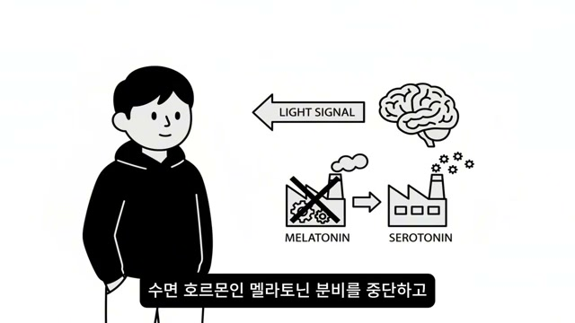
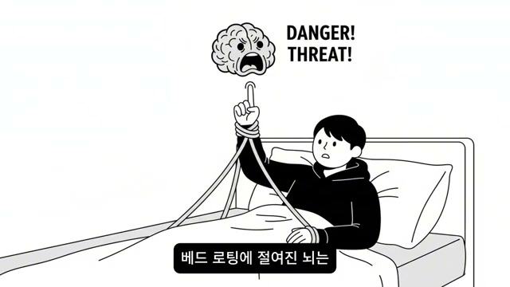
환경 조절은 의지 보조 장치가 아니라 생물학적 신호 조작으로 설명된다. 발화자는 방이 어두우면 뇌가 계속 밤이라고 착각하기 때문에, 스탠드 조명을 켜거나 커튼을 조금만 젖혀 아주 작은 빛이라도 넣어야 하며, 망막의 광감지 세포가 이를 받아 멜라토닌을 멈추고 세로토닌을 만들라고 지시한다고 말한다. LIGHT SIGNAL, MELATONIN, SEROTONIN이라는 영어 라벨과 화살표는 이 기전 설명을 매우 단순한 공장 도식처럼 그려 보여준다. 그러나 곧바로 DANGER! THREAT!를 외치는 뇌 그림이 뒤따르는데, 이는 뇌가 왜 이런 변화에 저항하는지에 대한 해설로 이어지며, 오래 베드 로팅에 절여진 뇌일수록 아주 작은 움직임조차 생존 위협으로 받아들여 “그냥 누워 있어, 움직이면 에너지 달아난다”라고 속삭인다고 설명한다.
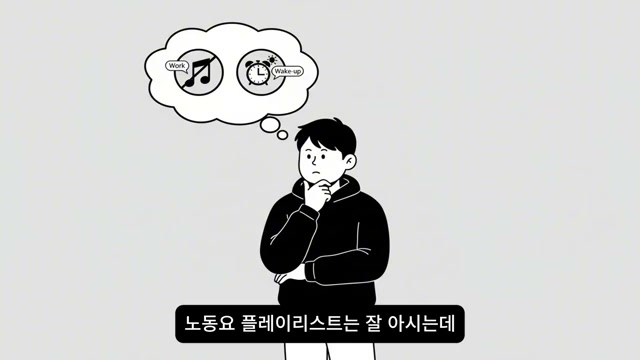
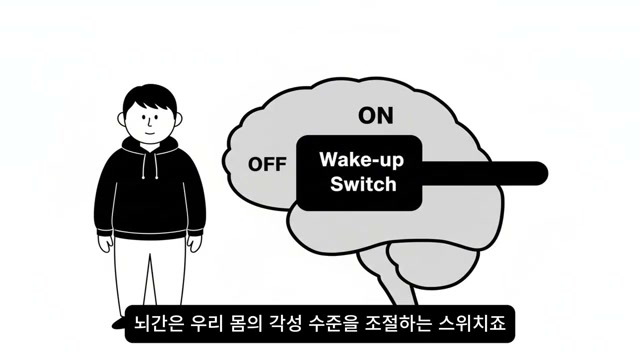
발화자는 여기서 독특한 표현을 쓴다. 우리는 노동요 플레이리스트는 잘 알지만 기상료는 낯설다고 하면서, 지금 필요한 것은 일을 위한 배경음이 아니라 몸을 깨우는 각성용 사운드라고 말한다. 그래서 유튜브나 스포티파이에서 마림바, 업비트 재즈처럼 가사가 없고 템포가 빠르며 경쾌한 연주곡을 찾고, 볼륨은 평소보다 두 단계만 올리라고 조언한다. 그는 가사가 있는 노래는 언어 중추를 자극해 다시 감상과 잡생각으로 빠지게 만들지만, 리듬이 강한 비트는 청각 피질을 통해 뇌간을 직접 자극해 심장 박동과 각성 수준을 음악 템포에 동기화시킨다고 주장한다. 두 번째 화면의 Wake-up Switch 도식은 바로 이 과정을 “꺼진 뇌를 켜는 스위치”로 단순화해 보여준다.
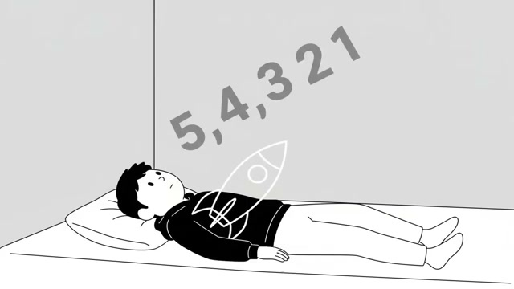
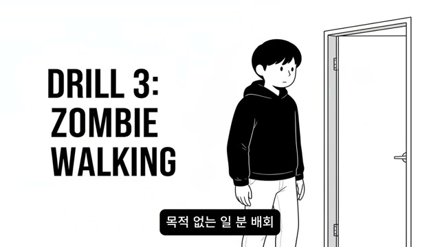
이 구간에서 영상은 멜 로빈스의 5초의 법칙을 베드 로팅용으로 변형한다. 발화자는 단순히 숫자를 세지 말고, 자신이 우주선 발사대에 누워 있는 우주비행사라고 상상하라고 요구한다. 5-4-3-2-1 카운트다운이 끝나는 순간 해야 하는 일은 “일어나기”가 아니라 “이불을 발로 뻥 차서 걷어내기”다. 차가운 공기가 피부에 닿는 순간적인 감각 변화가 뇌 패턴을 끊는 결정적 충격 요법이라는 설명이 이어지고, 화면은 곧 DRILL 3: ZOMBIE WALKING으로 넘어가며 이불 밖 이후의 다음 단계가 기다리고 있음을 예고한다.
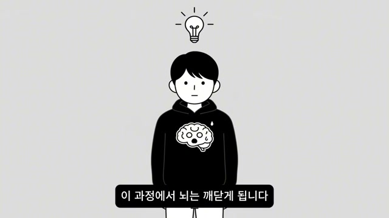
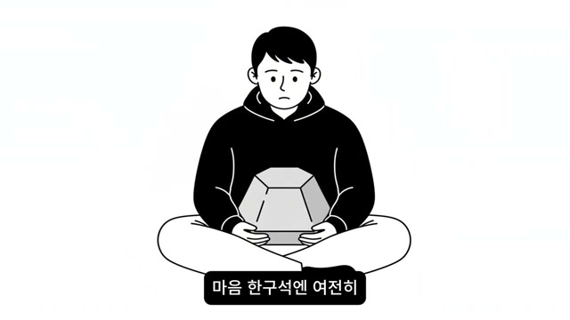
발화자는 이불을 걷어내고 상체를 세웠다면, 이제 딱 1분만 목적 없이 방 안을 좀비처럼 어슬렁거리라고 한다. 화장실에 가도 되고 냉장고 문을 열어봐도 되지만, 절대로 청소나 물 마시기 같은 목적을 만들면 안 된다고 경고하는데, 목적이 생기는 순간 뇌가 다시 그것을 일로 인식해 스트레스를 받기 때문이라는 것이다. 핵심 논리는 “아무 생각 없이 발을 질질 끌며 걷는 행위 자체가 정체된 다리의 정맥 펌프를 가동해 뇌로 산소를 올리고, 그 과정에서 뇌가 ‘움직여도 별일이 안 난다’는 사실을 깨닫는다”는 데 있다. 두 번째 화면의 무거운 돌덩이는 영상 후반에 다시 돌아오는 자기비난과 죄책감의 상징인데, 발화자는 바로 그 돌덩이를 한 번에 치우려 하지 말고 마이크로 승리를 쌓으라고 말한다.
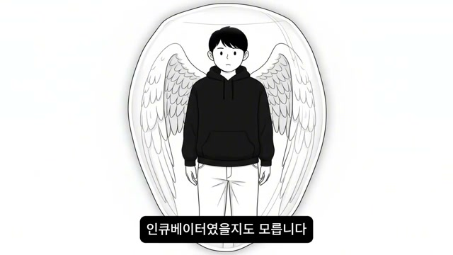
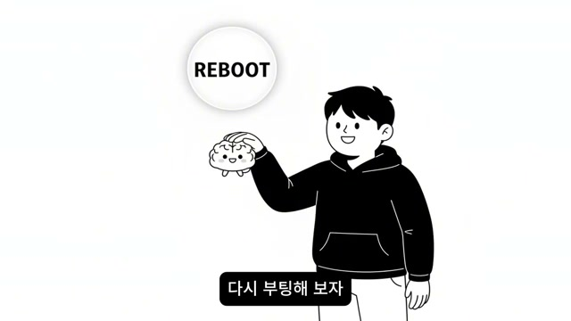
후반부의 정서적 전환은 매우 중요하다. 발화자는 “당신이 침대에 누워 있었던 것은 게을러서가 아니라 그만큼 치열하게 고민하고 감내하고 버텨왔다는 증거”라고 말하며, 깊은 동굴을 도망 장소가 아니라 날개를 정비하던 인큐베이터로 재해석한다. 화면이 사람을 날개 달린 고치 속에 세우는 장면은 이 메시지를 극적으로 시각화하며, 뒤이어 REBOOT 버튼과 함께 귀여운 뇌를 들어 올리는 그림은 “내 뇌가 나를 보호하려고 잠시 셧다운 버튼을 눌렀었구나. 고맙다. 하지만 이제는 안전하니 다시 부팅해 보자”는 자기 대화를 거의 교본처럼 보여준다. 즉 이 부분의 핵심은 처벌이 아니라 협상, 자기혐오가 아니라 자기보호의 재해석이다.
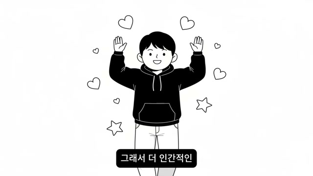
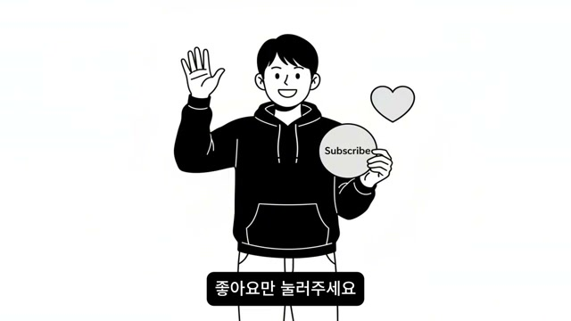
마지막 구간에서 발화자는 시청자에게 댓글창에 “나는 오늘 이불을 걷어찼다”라고 한 문장만 남기라고 요청한다. 아직 실제로 못 했더라도 괜찮으며, 이 선언 자체가 뇌에 보내는 강력한 행동 명령어가 되고, 다른 사람들의 댓글을 보며 서로의 러닝메이트가 될 수 있다고 말한다. 또한 “당신의 침대는 더 이상 무덤이 아니라 내일을 위한 진정한 충전소가 될 것”이라고 말하며, 지금 이 영상을 끝까지 본 행위 자체를 이미 변화의 첫 단추를 끼운 것으로 해석한다. 엔딩 화면은 하트, 별, Subscribe 원형 버튼을 든 캐릭터로 마무리되며, 채널을 “데이터로 증명하고 심리로 해결하는 당신의 성장 전략 큐레이터”라고 소개하고, 다음 영상에서는 미루는 습관을 3분 만에 깨는 도파민 리모델링 전략으로 돌아오겠다고 예고한다.
“베드 로팅이라는 그럴듯한 단어 뒤에 숨은 위험성을 경고하기 위해 제가 왔습니다.”
“이건 휴식이 아닙니다. 뇌의 전두엽 기능이 정지되는 이른바 인지적 가사 상태에 가깝습니다.”
“당신의 뇌세포는 서서히 질식해 가고 있었던 거죠.”
“이건 성격 문제가 아닙니다. 의지 문제도 아닙니다.”
“즉 당신은 게으른 게 아니라 지금 방전된 겁니다.”
“억지로 일어나려고 노력하지 마세요.”
“나는 생각한다 고로 존재한다가 아닙니다. 나는 느낀다 고로 존재한다로 뇌의 모드를 바꿔야 합니다.”
“도파민 디톡스가 아니라 도파민 스위칭입니다.”
“거창한 계획은 완벽주의자의 적입니다.”
“오늘 당신의 목표는 침대 탈출이 아니라 이불을 한번 걷어차 보는 것.”
“당신이 침대에 누워 있었던 건 당신이 게을러서가 아니라 당신의 뇌가 그만큼 치열하게 버텨왔다는 증거입니다.”
“당신의 침대는 더 이상 무덤이 아니라 내일을 위한 진정한 충전소가 될 것입니다.”
이 영상의 핵심 메시지는 명확하다. 발화자는 베드 로팅을 “게으름”이 아니라 “과부하된 뇌와 신경계가 택한 동결·셧다운 반응”으로 재정의하고, 자기비난보다 신경계 재부팅이 먼저라고 말한다. 그래서 해결책도 거대한 결심이 아니라 발가락 움직이기, 상체 45도 세우기, 빛 넣기, 가사 없는 빠른 음악 틀기, 5초 카운트다운, 이불 걷어차기, 1분 좀비 워킹처럼 아주 작은 물리적 개입들로 제시된다.
실용적 시사점은 세 가지다. 첫째, 이 영상은 동기부여를 의지력 강화가 아니라 환경·자세·감각·리듬 조작의 문제로 바꾼다. 둘째, 완벽주의자일수록 목표를 극단적으로 낮춰야 실제 움직임이 생긴다는 점을 반복한다. 셋째, 과학 용어와 연구 이름을 호출하지만 화면은 실제 논문 그래프보다 흑백 상징 일러스트와 영어 키워드 중심으로 구성되어 있어, 이 콘텐츠는 의학적 서사 + 자기계발 서사 + 정서적 위로를 결합한 형태라고 볼 수 있다.
향후 전망까지 포함하면, 이 영상은 단발성 위로보다 연속 시청 구조를 겨냥한다. 이번 편에서 베드 로팅을 “충전 시스템 고장”으로 재프레이밍한 뒤, 다음 편에서는 미루는 습관을 3분 만에 부수는 도파민 리모델링 전략으로 이어가겠다고 예고한다. 결국 이 영상이 시청자에게 남기려는 최종 인상은 하나다. “지금 당장 인생을 바꾸지 못해도 괜찮다. 다만 이불 한 번 걷어차는 것부터 시작하면, 침대는 무덤이 아니라 다시 살아나는 장소가 될 수 있다.”
댓글
GitHub 이슈 기반 댓글 시스템입니다.